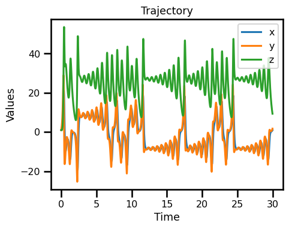

Lorenz 63#
import autoroot # noqa: F401, I001
import jax
import jax.numpy as jnp
import numpy as np
import matplotlib.pyplot as plt
import seaborn as sns
import diffrax as dfx
import xarray as xr
import equinox as eqx
from jaxsw import L63State, Lorenz63, rhs_lorenz_63
sns.reset_defaults()
sns.set_context(context="talk", font_scale=0.7)
%matplotlib inline
%load_ext autoreload
%autoreload 2
Lorenz 63#
Equation of Motion
Observation Operator
Integrate
Equation of Motion#
\[\begin{split}
\begin{aligned}
\frac{dx}{dt} &= \sigma (y - x) \\
\frac{dy}{dt} &= x (\rho - z) - y \\
\frac{dz}{dt} &= xy - \beta z
\end{aligned}
\end{split}\]
where \((\sigma,\rho,\beta)\) are hyperparameters.
# initialize state
state = L63State.init_state(noise=0.01)
x, y, z = state.x, state.y, state.z
print(x.shape, y.shape, z.shape, state.array.shape)
(1,) (1,) (1,) (3,)
sigma, rho, beta = 10, 28, 2.667
# initialize state and params
state, params = L63State.init_state_and_params(noise=0.01, sigma=10, rho=28, beta=2.667)
# rhs
x, y, z = state.x, state.y, state.z
sigma, rho, beta = params.sigma, params.rho, params.beta
state_dot = rhs_lorenz_63(x=x, y=y, z=z, sigma=sigma, rho=rho, beta=beta)
x_dot, y_dot, z_dot = state_dot
assert x.shape == y.shape == z.shape == x_dot.shape
assert x_dot.shape == y_dot.shape == z_dot.shape == x.shape
Model#
# initialize state
state_init, params = L63State.init_state_and_params(
noise=0.01, sigma=10, rho=28, beta=2.667
)
# initialize model
l63_model = Lorenz63()
# step through
state_dot = l63_model.equation_of_motion(t=0, state=state_init, args=params)
state_dot
L63State(x=Array([0.07530808], dtype=float32), y=Array([25.796669], dtype=float32), z=Array([-1.6745309], dtype=float32))
Time Stepping#
dt = 0.01
t0 = 0.0
t1 = 30.0
# observe_every = 10
ts = jnp.arange(t0, t1, dt)
num_tsteps = len(ts)
saveat = dfx.SaveAt(t0=t0, t1=t1, ts=ts)
saveat
SaveAt(
subs=SubSaveAt(
t0=0.0,
t1=30.0,
ts=f32[3000],
steps=False,
fn=<function save_y>
),
dense=False,
solver_state=False,
controller_state=False,
made_jump=False
)
# Euler, Constant StepSize
solver = dfx.Euler()
stepsize_controller = dfx.ConstantStepSize()
# integration
sol = dfx.diffeqsolve(
terms=dfx.ODETerm(l63_model.equation_of_motion),
solver=solver,
t0=ts.min(),
t1=ts.max(),
dt0=dt,
y0=state_init,
saveat=saveat,
args=params,
stepsize_controller=stepsize_controller,
)
sol.ys.x.shape, sol.ts.shape
((3001, 1), (3001,))
ds_sol = xr.Dataset(
{
"x": (("time"), sol.ys.x.squeeze()),
"y": (("time"), sol.ys.y.squeeze()),
"z": (("time"), sol.ys.z.squeeze()),
},
coords={
"time": (["time"], np.asarray(sol.ts)),
},
attrs={
"ode": "lorenz_63",
"sigma": params.sigma,
"beta": params.beta,
"rho": params.rho,
},
)
ds_sol
<xarray.Dataset>
Dimensions: (time: 3001)
Coordinates:
* time (time) float32 0.0 0.01 0.02 0.03 0.04 ... 29.97 29.98 29.99 29.99
Data variables:
x (time) float32 0.9925 0.9932 1.02 1.069 ... 0.8543 0.9266 0.9266
y (time) float32 1.0 1.258 1.514 1.774 ... 1.449 1.578 1.719 1.719
z (time) float32 1.0 0.9833 0.9695 0.9591 ... 9.827 9.576 9.334 9.334
Attributes:
ode: lorenz_63
sigma: 10
beta: 2.667
rho: 28fig, ax = plt.subplots(figsize=(5, 4))
ds_sol.x.plot(ax=ax, label="x")
ds_sol.y.plot(ax=ax, label="y")
ds_sol.z.plot(ax=ax, label="z")
ax.set_xlabel("Time")
ax.set_ylabel("Values")
ax.set_title("Trajectory")
plt.legend()
plt.tight_layout()
plt.show()

fig, ax = plt.subplots(subplot_kw={"projection": "3d"})
ax.plot(
ds_sol.x,
ds_sol.y,
ds_sol.z,
lw=1.0,
color="blue",
label="Trajectory",
)
# ax.scatter3D(out.x[::10], out.y[::10], out.z[::10], lw=0.5, color="red", label="y")
ax.set_xlabel("X")
ax.set_ylabel("Y")
ax.set_zlabel("Z")
plt.legend()
plt.tight_layout()
plt.show()
Generating Observations#
ds_sol_ = ds_sol.to_array(dim="component", name="simulation").to_dataset()
ds_sol_
<xarray.Dataset>
Dimensions: (time: 3001, component: 3)
Coordinates:
* time (time) float32 0.0 0.01 0.02 0.03 ... 29.97 29.98 29.99 29.99
* component (component) object 'x' 'y' 'z'
Data variables:
simulation (component, time) float32 0.9925 0.9932 1.02 ... 9.334 9.334ds_sol = ds_sol.to_array(dim="component", name="simulation").to_dataset()
ds_sol["observations"] = xr.full_like(ds_sol.simulation, np.nan)
ds_sol
<xarray.Dataset>
Dimensions: (time: 3001, component: 3)
Coordinates:
* time (time) float32 0.0 0.01 0.02 0.03 ... 29.97 29.98 29.99 29.99
* component (component) object 'x' 'y' 'z'
Data variables:
simulation (component, time) float32 0.9925 0.9932 1.02 ... 9.334 9.334
observations (component, time) float32 nan nan nan nan ... nan nan nan nanMissing Time#
sample_step = 20
ds_sol["observations"] = xr.full_like(ds_sol.simulation, np.nan)
ds_sol["observations"].loc[::sample_step] = ds_sol["simulation"].loc[::sample_step]
fig, ax = plt.subplots(subplot_kw={"projection": "3d"})
ax.plot(
ds_sol.simulation.sel(component="x"),
ds_sol.simulation.sel(component="y"),
ds_sol.simulation.sel(component="z"),
lw=1.0,
color="blue",
label="Trajectory",
)
ax.scatter3D(
ds_sol.observations.sel(component="x"),
ds_sol.observations.sel(component="y"),
ds_sol.observations.sel(component="z"),
lw=0.5,
color="red",
label="Observations",
)
ax.set_xlabel("X")
ax.set_ylabel("Y")
ax.set_zlabel("Z")
plt.legend()
plt.tight_layout()
plt.show()
Adding Noise#
# def add_noise(da, sigma=2**.5):
# return da + np.random.randn(*da.shape) * sigma
sigma = 2**0.5
ds_sol["observations"] += sigma * np.random.randn(*ds_sol["observations"].shape)
fig, ax = plt.subplots(subplot_kw={"projection": "3d"})
ax.plot(
ds_sol.simulation.sel(component="x"),
ds_sol.simulation.sel(component="y"),
ds_sol.simulation.sel(component="z"),
lw=1.0,
color="blue",
label="Trajectory",
)
ax.scatter3D(
ds_sol.observations.sel(component="x"),
ds_sol.observations.sel(component="y"),
ds_sol.observations.sel(component="z"),
lw=0.5,
color="red",
label="Observations",
)
ax.set_xlabel("X")
ax.set_ylabel("Y")
ax.set_zlabel("Z")
plt.legend()
plt.tight_layout()
plt.show()
Batch of Observations#
# initialize state
state = L63State.init_state(noise=0.01, batchsize=100)
x, y, z = state.x, state.y, state.z
print(x.shape, y.shape, z.shape, state.array.shape)
# initialize model
l63_model = Lorenz63()
(100, 1) (100, 1) (100, 1) (100, 3)
batchsize = 100
sigma, rho, beta = 10, 28, 2.667
state_batch, params = L63State.init_state_and_params(
batchsize=batchsize, noise=0.01, sigma=10, rho=28, beta=2.667
)
fn_batched = jax.vmap(rhs_lorenz_63, in_axes=(0, 0, 0, None, None, None))
state_dot_batch = fn_batched(
state_batch.x, state_batch.y, state_batch.z, sigma, rho, beta
)
x_dot, y_dot, z_dot = state_dot_batch
# state_dot_batch = fn_batched(state_batch)
assert x_dot.shape == y_dot.shape == z_dot.shape == state_batch.x.shape
assert state_batch.x.shape == state_batch.y.shape == state_batch.z.shape == x_dot.shape
fn_batched = jax.vmap(l63_model.equation_of_motion, in_axes=(None, 0, None))
state_dot_batch_ = fn_batched(0, state_batch, params)
x_dot_, y_dot_, z_dot_ = state_dot_batch_
# state_dot_batch = fn_batched(state_batch)
np.testing.assert_array_equal(x_dot, x_dot_)
np.testing.assert_array_equal(y_dot, y_dot_)
np.testing.assert_array_equal(z_dot, z_dot_)
assert x_dot.shape == y_dot.shape == z_dot.shape == state_batch.x.shape
assert state_batch.x.shape == state_batch.y.shape == state_batch.z.shape == x_dot.shape
dt = 0.01
t0 = 0.0
t1 = 30.0
# observe_every = 10
ts = jnp.arange(t0, t1, dt)
num_tsteps = len(ts)
saveat = dfx.SaveAt(t0=t0, t1=t1, ts=ts)
saveat
SaveAt(
subs=SubSaveAt(
t0=0.0,
t1=30.0,
ts=f32[3000],
steps=False,
fn=<function save_y>
),
dense=False,
solver_state=False,
controller_state=False,
made_jump=False
)
# Euler, Constant StepSize
solver = dfx.Euler()
stepsize_controller = dfx.ConstantStepSize()
# integration
integrate = lambda state: dfx.diffeqsolve(
terms=dfx.ODETerm(l63_model.equation_of_motion),
solver=solver,
t0=t0,
t1=t1,
dt0=dt,
y0=state,
saveat=saveat,
args=params,
stepsize_controller=stepsize_controller,
)
sol = jax.vmap(integrate)(state_batch)
state_batch.x.shape, sol.ys.x.shape
((100, 1), (100, 3001, 1))
ds_sol = xr.Dataset(
{
"x": (("realization", "time"), sol.ys.x.squeeze()),
"y": (("realization", "time"), sol.ys.y.squeeze()),
"z": (("realization", "time"), sol.ys.z.squeeze()),
},
coords={
"time": (["time"], sol.ts[0].squeeze()),
},
attrs={
"ode": "lorenz_63",
"sigma": params.sigma,
"beta": params.beta,
"rho": params.rho,
},
)
ds_sol
<xarray.Dataset>
Dimensions: (realization: 100, time: 3001)
Coordinates:
* time (time) float32 0.0 0.01 0.02 0.03 0.04 ... 29.97 29.98 29.99 30.0
Dimensions without coordinates: realization
Data variables:
x (realization, time) float32 1.001 1.001 1.027 ... 1.127 1.22 1.321
y (realization, time) float32 1.0 1.26 1.518 ... 2.056 2.237 2.435
z (realization, time) float32 1.0 0.9833 0.9697 ... 10.15 9.904 9.667
Attributes:
ode: lorenz_63
sigma: 10
beta: 2.667
rho: 28fig, ax = plt.subplots(nrows=3, figsize=(5, 8))
for i in range(3):
ds_sol.x.sel(realization=i).plot(ax=ax[i])
ds_sol.y.sel(realization=i).plot(ax=ax[i])
ds_sol.z.sel(realization=i).plot(ax=ax[i])
ax[i].set_xlabel("Time")
ax[i].set_ylabel("Values")
ax[i].set_title(f"Trajectory: {i}")
plt.legend()
plt.tight_layout()
plt.show()
No artists with labels found to put in legend. Note that artists whose label start with an underscore are ignored when legend() is called with no argument.